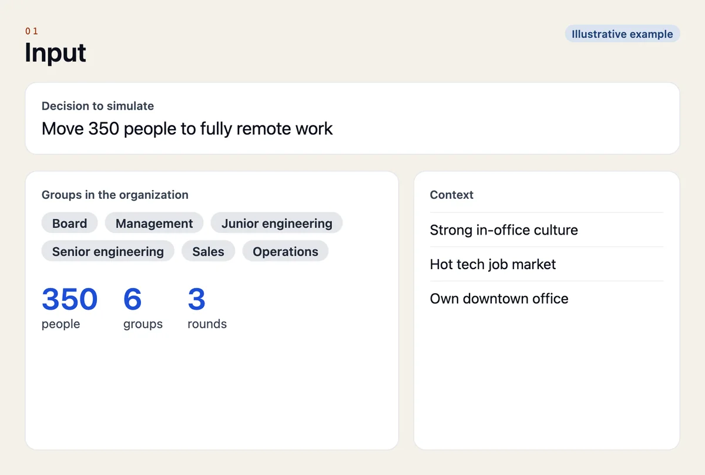
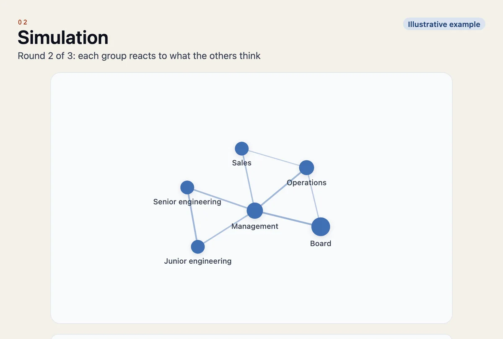
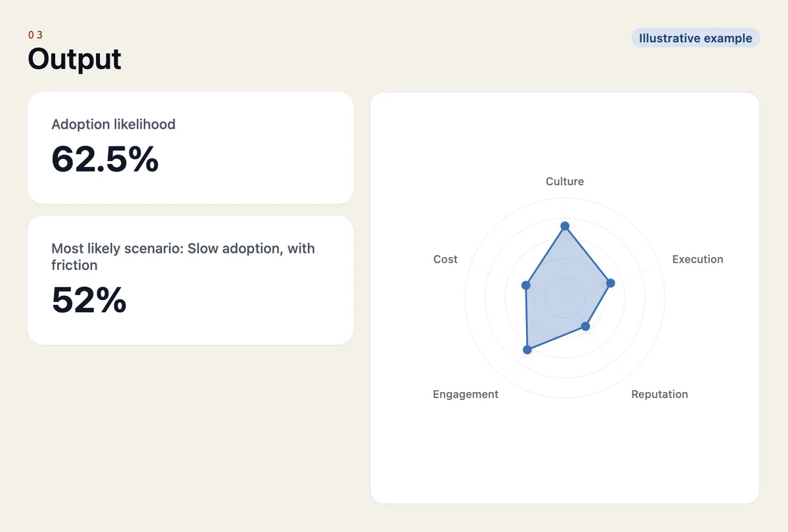
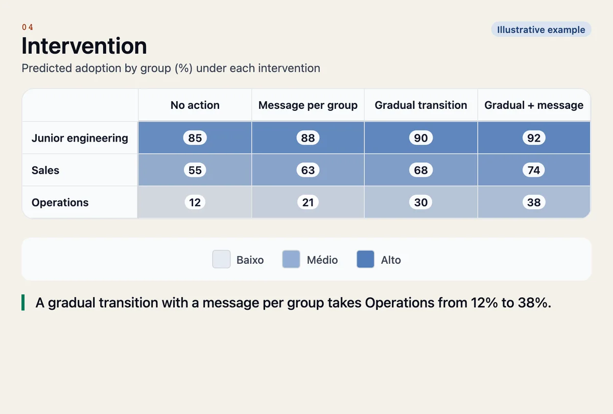

We turn human data into synthetic societies to test decisions before execution.
Every decision sets off reactions in a human system before it becomes a result.
Between intention and execution there are people. There is behavior. Granovetter simulates those behaviors to anticipate outcomes, showing which scenarios are most likely to deliver the best return and which risks could compromise time, money and trust.
Simulate critical scenarios before a decision costs too much.
Granovetter lowers the cost of deciding wrong.
We created the grano.protocol, a behavioral simulation method built on artificial intelligence and applied science to turn strategic decisions into testable scenarios. Simulating behavior is only the means. The end is showing which paths produce the best outcome before the decision burns time, money and trust.
Decision risk
Which path is likely to work best before you implement it.
Buy-in risk
Who is likely to buy in, resist, distort or ignore the decision.
Execution risk
What could compromise productivity, focus, collaboration and speed.
Cultural risk
Whether the decision strengthens or weakens trust, climate, belonging and openness to change.
Reputational risk
Noise, cynicism, parallel narratives and erosion of leadership.
Granovetter’s method, grano.protocol, turns strategic decisions into behavioral simulations: it takes in real data from the organization, builds synthetic agents for each group and delivers inferences to support the decision before execution.
Input
Cultural data, group profiles, organizational context, external environment and the decision to be tested.
Simulation
Synthetic agents interact with scenarios, pressures, narratives and strategic variables.
Output
Likely scenarios, emerging risks, hidden tensions, patterns of buy-in and resistance, and recommendations for the decision.
Intervention
Actions tested before acting: communication, incentives and pace of change are simulated again to see which one reduces resistance.
The engine is open source.
In round 1, each synthetic agent reacts alone. From round 2 on, it is exposed to the group consensus and to opposing views. The analysis measures adoption, resistance, conformism and anxiety, and locates the tipping point.
Simulation is not prediction: it is decision support, to be validated against the organization's own data. See the code on GitHub →
Moving 350 people to fully remote work.
An example with a fictional organization, included in the Granovetter engine: 6 groups, 3 simulation rounds. In the first, each group reacts alone; in the next ones, it also reacts to what the others think.
Simulation is not prediction: it is decision support, to be validated against the organization’s own data.
How Granovetter shows this case




Screens use the fictional example’s data; the intervention table is illustrative.
People who decide about people.
Board and executives
Restructurings, mergers, changes in business model and leadership.
HR and People
Work model, policies, benefits, culture and climate.
Sales
Commission plans, targets, territories and sales incentives.
Internal communication
How, when and to whom to announce a change, with the right message for each group.
AI Behavioral Science.
The convergence of behavioral science, complex systems and generative artificial intelligence.
For decades, science has shown that human behavior is not random. People interpret risk, respond to incentives, resist losses, imitate groups and shift position under social pressure.
The recent discovery is that generative models do something larger than language: they reproduce patterns of social behavior in synthetic environments, interacting, adapting and influencing one another.
When behavioral science, generative agents and simulation meet, decisions stop being merely imagined. They start being tested.
The name honors Mark Granovetter, the Stanford sociologist. In Threshold Models of Collective Behavior (1978), he showed that each person has a threshold: how many others must join before they do. In The Strength of Weak Ties (1973), that innovations travel better through weak ties. Thresholds, social pressure, cascades and tipping points are what Granovetter simulates.
My name is Dheiver Santos, PhD.
- 200+
- papers
- 550+
- citations
- 12
- h-index
- 1
- INPI patent
- 10
- AI products
I am the founder of Granovetter. Machine learning engineer and AI researcher, with a PhD in Chemical Engineering with an emphasis on Artificial Intelligence (UFBA/UFRJ) and postdoctoral research at UNICAMP/UNIT (CNPq) and UFAL (FUNDEPES). I worked as Senior Staff Machine Learning Engineer at SX Negócios, Senior Scientist at Grupo Boticário and AI professor at UPE and Estácio.
I created Mangaba.AI, an open-source framework for teams of autonomous AI agents, and founded Cognai, a healthtech applying AI to cardiology. 200+ papers, 550+ citations, h-index 12, an INPI patent and 10 AI products delivered in real clinical and operational workflows.
Frequently asked questions.
What is a synthetic society?
A set of AI agents, each representing a real group in the organization, with its own values, risk tolerance and narrative. The agents react to the decision and then to each other.
Does simulation replace research with people?
No. Simulation is not prediction: it is decision support. It helps anticipate patterns, tensions and risks, and should be validated against the organization’s own data.
What kind of decision can be simulated?
Changes whose outcome depends on how people react: work model, pay and commission policies, restructurings, mergers and how each of them is communicated.
What data does Granovetter need?
Profiles of the groups involved, cultural data, the organizational and external context, and the decision to be tested.
What do I get at the end?
Likely scenarios, emerging risks, buy-in and resistance patterns by group, the tipping point and recommendations, plus testing interventions before acting.
Is the engine open?
Yes. The simulation engine is open source, and the research behind the method is on the research page.
A tool for deciding better.
We are a small team working at the frontier of multi-agent simulation, behavioral modeling and applied AI to solve the biggest problem in running a company: the lack of predictability.
Which future do you want to simulate?
Run it yourself.
The Granovetter simulation engine is open. Run the example scenarios, adapt them to your organization's profile and follow the development.